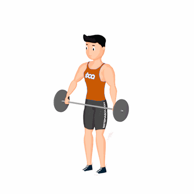

Hang Power Snatch

Esse exercício tem como objetivo ajudar no desenvolvimento da força e potência do corpo, trabalhando com intensidade os músculos inferiores e superiores.
Ficha Técnica
Tipo: CrossFit
Grupo Muscular: Corpo
Aparelho: Nenhum
Músculos: Nenhum
Como realizar
- Com uma pegada rápida, levante a barra e fique em pé;
- Abaixe a barra sob controle até o meio da coxa;
- Inicie o movimento empurrando o chão com as pernas e estenda os quadris agressivamente, mantendo a barra bem próxima ao corpo e colocando-a em contato com os quadris conforme você atinge a extensão completa;
- Depois de estender, levante e mova seus pés em postura de agachamento enquanto mantêm seus cotovelos para cima e para os lados para mover-se para um agachamento parcial sob a barra;
- Empurre a barra para cima, estabilizando e recuperando a posição ereta com a barra acima da cabeça;
- Retorne a barra a posição inicial.
 RC STORE
RC STORE